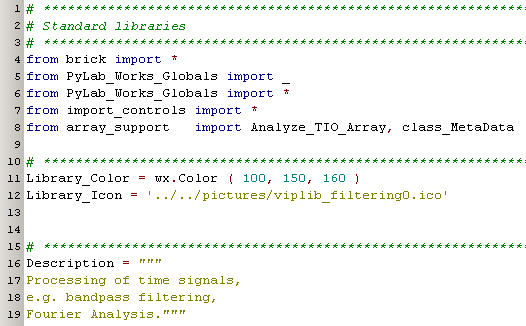
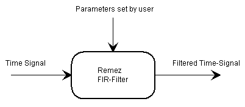
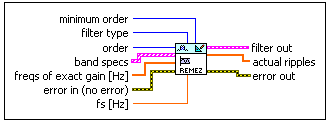
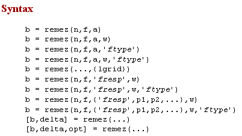
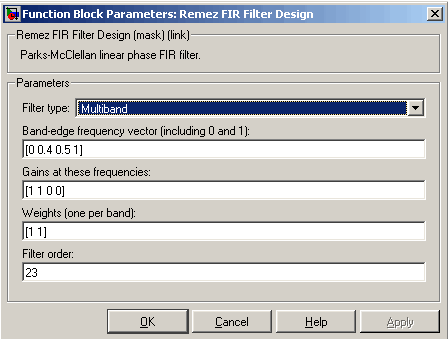
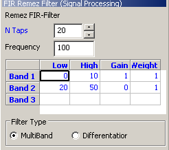
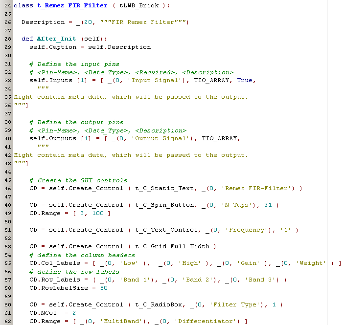
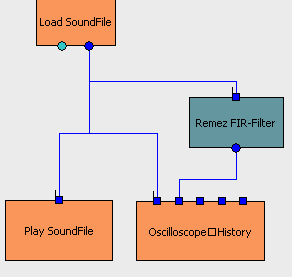

Example Building a Brick  ( june 2009 )
( june 2009 )
Application Designer / Domain Expert / Control Designer / Core Developer
Introduction
This chapter gives an example of how to build and test a new Brick, by just following the manual, and assuming we're an expert on the given domain. As we don't have an appropriate library to place this component, we'll also create a new Brick-library.
Creating a new Brick's library
Let's create a new file, called brick_Signal_Processing.py and put this file in the directory PyLab_Works/bricks/. Now the next time PyLab_Works is started, it will find this file, and puts "Signal_Processing" in the library tree.
We just copy the top of another library, containing the basic imports, and the basic library settings. Now adapt the basic library settings Library_Color, Library_Icon and Description with the appropriate values and the base of the library is ready. Now all classes in this library, starting with "t_" will be recognized as Bricks.

Function of the Brick
From the new Brick we expect that it will filter time signals, with some kind of stable filter, namely the Remez FIR-Filter. The parameters of the filter need to be changeable in an easy way. So the brick might look somewhat like this:

As a domain expert I know that the calculation of the filter is already available in the library scipy.signal.
scipy.signal.remez(numtaps, bands, desired, weight=None, Hz=1, type='bandpass', maxiter=25, grid_density=16)
If you use this formula every day, it might be clear what the parameters all mean. But if you use this formula every day, but in different packages, like Python and MatLab, it will be hard to remember the exact meaning of these parameters, because the slightly differ in the packages. So an important task will be to give enough information, so everyone will understand the parameters at any moment. Another important issue with this filter is, that you can't predict the exact behavior, given a certain set of parameters. Therefor there's a necessity to design the filter by trial and error and to compare the different results, and it might be worth to watch other results from the filter than the response on the available signal (e.g. Impulse Response, Phase Characteristics, etc.).
And also from the scipy library we have a formula to calculate the filtered output signal:
scipy.signal.lfilter(b, a, x, axis=-1, zi=None)
Before we start the design of the Brick, it's always wise to see how others solved this problem:
In LabView (with Digital Filter Design Toolkit):

In MatLab:


Now let's turn back to our formula
scipy.signal.remez(numtaps, bands, desired, weight=None, Hz=1, type='bandpass', maxiter=25, grid_density=16)
From this formula, knowing what every parameter means, we can directly construct the following window for our Brick:
|
 |
On the left we specify a lowpass filter form 0 .. 10 Hz, with an order of about 20. MatLab users might notice that the Gain vector and the Weight vector are just half the size of the band vector, which is logical, so MatLab demands redundant information. The third form of this filter ( the Hilbert Transform) is not supported by Scipy. Compared to both MatLab and LabView, the solution on the left is much more readable. Looking at the flatness of information, the solution on left is superior to the LabView solution. |
The the two parameters maxiter and density are in general of no interest, they specify only how the result is reached, and hardly what result is reached. These parameters are also missing in MatLab and LabView.
Now the above window can be realized with the following Brick definition:

Quit straight forward, and all texts are already prepared for multi-language support.
Now it's time to use our Brick, e.g. like this:

While there's still no generate output signals function, running won't show anything relevant.
So let's add the filter implementation, like this:
Sprucing up
Multi Signals
Input Selector
Characteristics Output
Catching Errors
Filter to File